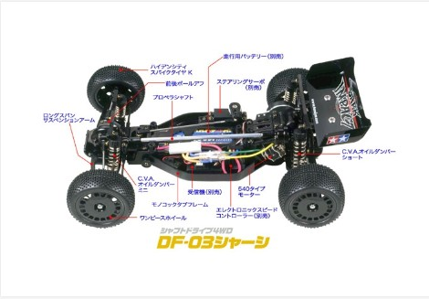

🚗 タミヤ DF-03

画像提供：タミヤ公式
📋 基本情報
| メーカー | タミヤ（Tamiya） |
|---|---|
| 機種名 | DF-03 |
| 型番 | 58370（ダークインパクト）など |
| 発売時期 | 2000年代後半 |
| 生産状況 | 現行販売中 |
| カテゴリー | ラジコンカー（1/10スケール 電動RCカー） |
| サブカテゴリー | バギー / 4WD（中級者向け） |
📏 シャーシスペック
| 全長 | 388mm |
|---|---|
| 全幅 | 250mm |
| 全高 | 152mm |
| ホイールベース | 272mm |
| トレッド | フロント217mm / リヤ203mm |
| フレーム | モノコックタブフレーム |
| 駆動方式 | シャフトドライブ4WD |
| デフギヤ | 前後ボールデフ |
| ステアリング | 3分割タイロッド式 |
| サスペンション | 4輪ダブルウィッシュボーン（ロングアーム） |
| ダンパー | CVAオイルダンパー |
| モーター | 540タイプ |
💡 特徴
🏁 レース指向の設計
多くの実戦で蓄積されたデータを基に開発されたレース指向の4WDバギー。プロトタイプの段階からワークスドライバーの手にゆだねられ、オフロードレースを戦うために生まれた。
⚖️ 優れた重量バランス
バッテリーをセンターに、RCメカを左右に配して重量バランスに優れる。重量物を中央に集めて搭載することで、高い走行安定性とコーナリング性能を発揮。
🔧 効率的な駆動系
フロントはプロペラシャフト先端のベベルギヤがボールデフキャリアと直接噛み合い、2次減速を廃止。プロペラシャフトを最短距離に配置し、ボールベアリングを標準装備。
📈 初心者から中級者まで
初心者から中級者まで幅広く遊べるシャーシ。セッティング次第で様々な走行スタイルに対応できる拡張性の高さが魅力。
🔧 ぽすとそに工房での修理実績
修理難易度
★
★
★
★
★
中級者向け（繊細な扱いが必要）
よくある故障・注意点
- フロントダンパーステーとリヤダンパーステーの激走行時の破損が目立つ - 少しセッティングを中級者以上のものにするとカーボンのほうがよい
- フロントもU型シャフト化するとなおよい - 駆動効率と耐久性の向上
- パーツ供給がたまに不安定 - 壊れやすそうなところは多めにパーツを持っておくとよい
修理のポイント
- パーツの在庫確保 - パーツ供給がたまに不安定になるので、壊れやすそうなところは多めにパーツを持っておくとよい
- カーボンパーツへのアップグレード - ダンパーステーはカーボン化することで耐久性が大幅に向上
- 繊細な扱い - 中級者向けシャーシということもあり、繊細に扱う必要がある
その他の特徴
- 初心者から中級者まで幅広く遊べる - セッティングの幅が広く、成長に合わせて楽しめる
- ロングアームサスペンション - 接地性に優れた設計
- レース向けポテンシャル - オプションパーツを満載すればMSクラスの性能